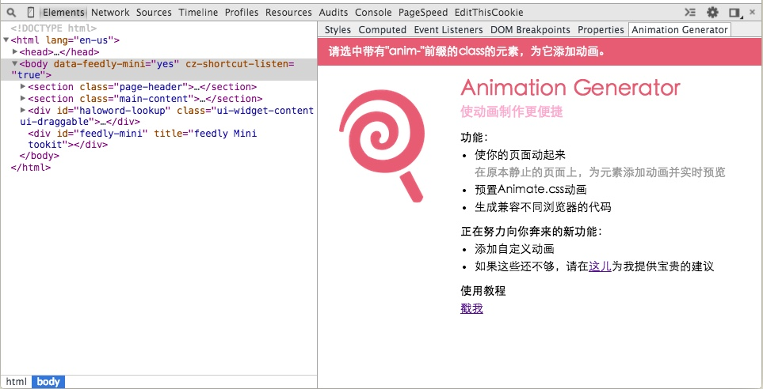

欢迎使用Animation Generator
Animation Generator是一个集成在Chrome开发者工具中的扩展程序。她旨在帮助web开发者轻松迅速地为页面上的元素添加动画。通过她，开发者可以为页面元素选择动画效果，动画时长，Timing function等，并实时预览。最终，Animation Generator会根据你的选项，生成兼容多浏览器的CSS动画代码。
使用步骤
-
安装
在这里安装Animation Generator, 安装完成后，打开开发者工具。在Elements标签栏的面板中，找到Animation Generator。 
-
在编写HTML时，为需要添加动画的元素设置"anim-"开头的类名
<h3 class="anim-title">Welcome</h3> -
使用开发者工具选中添加好"anim-*"类名的元素，开始设置动画
在Animation Generator面板中，你可以为元素选择动画类型，时常，重复次数等Animation属性。
- Animation name: 动画类型。预置了Animate.css中的动画。
-
Selector format:
设置Selector format可以帮助你控制动画在不同的时机生效。
{{your className}}是元素的类名"anim-*"的占位符。 例如，当为类名为"anim-title"的元素添加动画时：
如果你指定Selector format为{{your className}}，那么生成的代码的选择器为.anim-title。
如果Selector format为.active {{your className}}，那么生成代码的选择器为.active .anim-title。
-
复制下方textArea中生成好的代码使用
开发中的新功能
-
自定义动画
新增自定义动画的功能，帮助开发者管理和复用动画代码。添加者无需关心代码兼容性问题，只需提供符合W3C标准的动画代码即可。
-
设置autoprefixer兼容前缀列表
可设置生成的代码需要支持哪些前缀。
建议和联系
这是作者的博客
如果你对Animation Generator有好的建议，欢迎在该页面评论。
如果发现了Animation Generator的bug，请到Github提Issues。